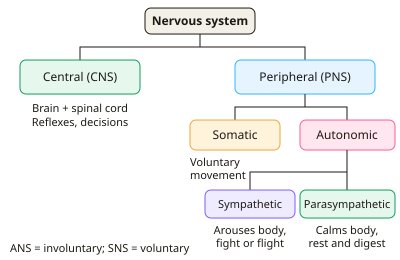

A-level Psychology Year 12 · Topic 10
Biopsychology: nervous system, hormones and the brain
Biopsychology explains how the nervous system and hormones control behaviour.
We will cover the divisions of the nervous system, neurons and synapses, and the endocrine system and fight or flight. Then we study localisation of function, lateralisation and split-brain research.
Finally we look at how the brain can change with experience and recover after damage, which is called plasticity.
- 7 subtopics
- 217 questions
- Free: 10.1 notes and 10 questions
In this topic
- 10.1Divisions of the nervous system: central, peripheral, somatic and autonomicFree below · 25 questions
- 10.2Neurons and synaptic transmissionOpen in Full Marks · 32 questions
- 10.3The endocrine system, hormones and the fight-or-flight responseOpen in Full Marks · 38 questions
- 10.4Localisation of function in the brainOpen in Full Marks · 36 questions
- 10.5Hemispheric lateralisation and split-brain researchOpen in Full Marks · 34 questions
- 10.6Brain plasticity and functional recovery after traumaOpen in Full Marks · 30 questions
- 10.7Ways of studying the brain: fMRI, EEG, ERPs and post-mortem examinationsOpen in Full Marks · 22 questions
10.1 · Free notes
Divisions of the nervous system: central, peripheral, somatic and autonomic

Key points
- The nervous system is the body's rapid communication network. It uses electrical and chemical signals to receive information, process it and coordinate responses. It has two main divisions: the central nervous system (CNS) and the peripheral nervous system (PNS).
- The CNS is the brain and spinal cord. The brain is the centre of conscious awareness, decision-making and control. The spinal cord relays messages between brain and body and coordinates simple reflex actions.
- Reflex actions (e.g. withdrawing a hand from heat) are processed in the spinal cord without waiting for the brain. This gives a shorter pathway and a faster, protective response.
- The PNS is all the nerves outside the CNS. It carries information to the CNS via sensory neurons and carries commands from the CNS to muscles and glands via motor neurons. It is subdivided into the somatic and autonomic nervous systems.
- The somatic nervous system (SNS) carries sensory information from receptors to the CNS and motor commands from the CNS to skeletal (voluntary) muscles. It controls voluntary movement.
- The autonomic nervous system (ANS) controls involuntary (automatic) functions such as heart rate, breathing, digestion and pupil size. Its motor pathways supply cardiac muscle, smooth muscle and glands. It is part of the PNS, not the CNS.
- The ANS has two branches: the sympathetic branch (arousal, preparing for action) and the parasympathetic branch (calming, 'rest and digest'). They are antagonistic: they have opposite effects on the same organ.
- Sympathetic effects: heart rate and blood pressure increase, breathing rate rises, pupils dilate, digestion and saliva are inhibited, and adrenaline is released. These changes produce the fight-or-flight response.
- Parasympathetic effects: heart rate slows, pupils constrict, digestion and saliva increase. This returns the body to its resting state (homeostasis) after a threat has passed.
- Exam tip: link each division to its function. Somatic = voluntary movement; autonomic = involuntary. Do not describe the ANS as only the 'stress system'. The parasympathetic branch is active during everyday rest.
In more detail
- Worked reflex arc: touching a hot pan → receptor in the skin → sensory neuron → relay neuron in the spinal cord → motor neuron → arm muscle contracts and the hand pulls away. The brain is informed a moment later.
- Worked exam scenario: before an exam the sympathetic branch speeds up your heart and makes your mouth dry; afterwards the parasympathetic branch slows the heart and digestion restarts.
- Diagram to learn: nervous system → CNS (brain and spinal cord) and PNS → somatic and autonomic → sympathetic and parasympathetic.
- Exam tip: quote the scenario. 'Racing heart' and 'sweaty palms' = sympathetic ANS; deciding to run = the brain (CNS); moving the legs = somatic nervous system.
Practice
Divisions of the nervous system: central, peripheral, somatic and autonomic: 10 questions
Pick an answer to check it, or open the answer for the explanation.
1. Which two structures make up the central nervous system?
- Brain and autonomic ganglia
- Spinal cord and somatic nerves
- Brain and cranial nerves
- Brain and spinal cord
Show answer
D: Brain and spinal cord. The CNS is the brain and spinal cord. All nerves outside these form the peripheral nervous system.
2. A student touches a hot pan and pulls her hand away before feeling pain. Which structure coordinates this reflex?
- Cerebral cortex
- Spinal cord
- Sympathetic branch
- Adrenal medulla
Show answer
B: Spinal cord. Reflex arcs are processed in the spinal cord, bypassing the brain. Pain is felt afterwards when the signal reaches the brain.
3. Motor neurons of the somatic nervous system carry messages from the CNS to which effectors?
- Skeletal muscles
- Smooth muscle of the gut
- Cardiac muscle
- Endocrine glands
Show answer
A: Skeletal muscles. The somatic system controls voluntary movement via motor neurons to skeletal muscle. Cardiac muscle, smooth muscle and glands are supplied by the ANS.
4. Which of these is a response produced by the parasympathetic branch?
- Pupils constrict
- Heart rate increases
- Digestion is inhibited
- Adrenaline is released
Show answer
A: Pupils constrict. The parasympathetic branch calms the body: pupils constrict, heart rate falls and digestion is stimulated. The other options are sympathetic effects.
5. A hiker suddenly meets a bear. Which pair of changes is mainly due to the sympathetic branch?
- Digestion speeds up and heart rate falls
- Pupils constrict and breathing slows
- Heart rate falls and saliva increases
- Heart rate rises and digestion slows
Show answer
D: Heart rate rises and digestion slows. Sympathetic activation raises heart rate and breathing and inhibits digestion to divert resources to muscles. The other options describe parasympathetic effects.
6. Which statement about the autonomic nervous system (ANS) is correct?
- It carries messages to skeletal muscle
- It is part of the central nervous system
- It controls involuntary functions such as heart rate
- Its two branches work together to raise heart rate
Show answer
C: It controls involuntary functions such as heart rate. The ANS is part of the PNS and controls involuntary activity. Its branches are antagonistic; skeletal muscle is served by the somatic system.
7. Which pairing of division and main function is correct?
- Somatic: involuntary organ control; ANS: voluntary movement
- Sympathetic: rest and digest; parasympathetic: arousal
- CNS: all the nerves outside the brain and spinal cord
- Somatic: voluntary movement; ANS: involuntary functions
Show answer
D: Somatic: voluntary movement; ANS: involuntary functions. Somatic = voluntary movement via skeletal muscles; ANS = involuntary functions. Sympathetic is arousal and the CNS is brain plus spinal cord.
8. Ten minutes after finishing an exam, a student's heart rate and breathing slow. Which branch is now dominant?
- Sympathetic branch
- Central nervous system
- Parasympathetic branch
- Somatic nervous system
Show answer
C: Parasympathetic branch. The parasympathetic branch restores the resting state after arousal. The somatic system and CNS are not divisions of the ANS.
9. Resting heart rate is 70 bpm. After a loud bang it is 110 bpm; two minutes later 75 bpm. Which branch explains the rise, then the fall?
- Somatic, then autonomic
- Sympathetic throughout, then somatic
- Sympathetic, then parasympathetic
- Parasympathetic, then sympathetic
Show answer
C: Sympathetic, then parasympathetic. The bang triggers sympathetic arousal (heart rate up). Once the threat passes, parasympathetic activity returns heart rate towards normal.
10. Why is a spinal reflex faster than a response needing a conscious decision?
- The pathway bypasses the brain so is shorter
- Reflexes use hormones, which act faster
- The parasympathetic branch speeds the signal
- Motor neurons in reflexes are unmyelinated
Show answer
A: The pathway bypasses the brain so is shorter. In a reflex the signal is processed in the spinal cord without passing through the brain, giving a shorter pathway and faster response.
Keep going in Full Marks
Full Marks has 25 questions on Divisions of the nervous system: central, peripheral, somatic and autonomic (15 more than here), set out in practice levels. You also get notes and 3D models for all 7 subtopics of Biopsychology: nervous system, hormones and the brain, plus games, timed exams and past papers.
On your exam board
Not in the OCR and Cambridge specifications.